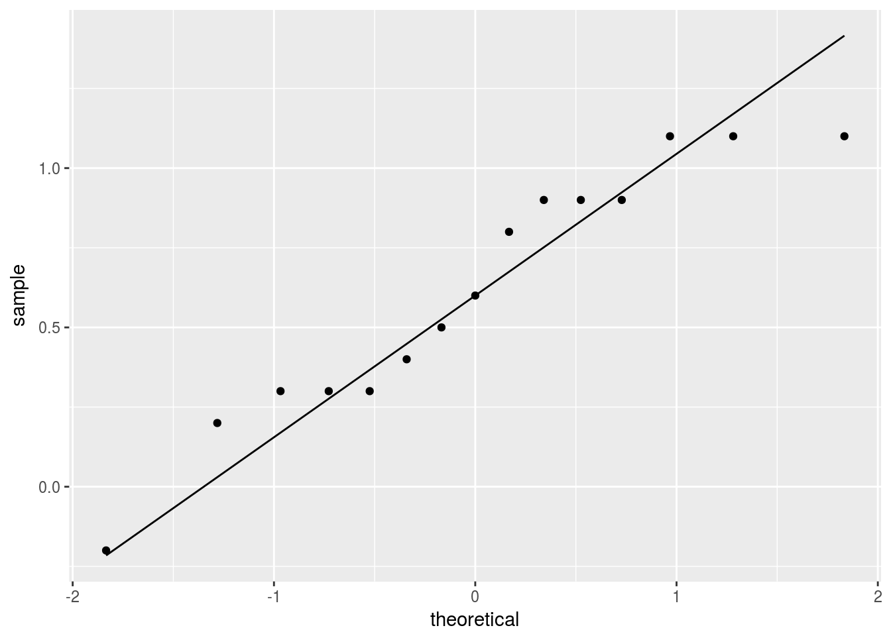
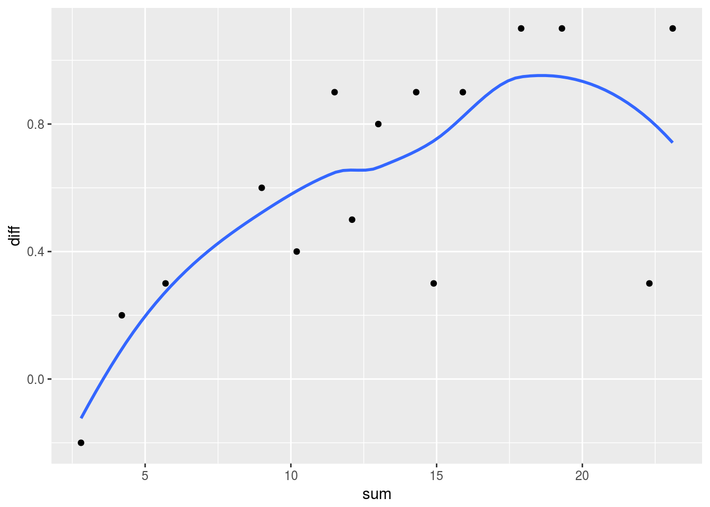

Tidy matched pairs t-test
Introduction
The matched pairs \(t\)-test is for comparing two measurements obtained on the same individual, such as a before and an after measurement. This is different from the two-sample \(t\)-test, which has two independent sets of measurements, one for each experimental condition, with each set collected on different individuals. The matched-pairs \(t\)-test is typically the first time we meet repeated-measures data (more than one measurement on the same individual, collected at different times or under different conditions), but we sidestep having to learn anything too new by looking at the difference between the two measurements on the same individual, thus turning the two measurements for each individual into one.
Packages
library(tidyverse)## ── Attaching packages ────────────────────────────────────────────────────────────────────────────────────── tidyverse 1.2.1 ──## ✔ ggplot2 2.2.1.9000 ✔ purrr 0.2.4
## ✔ tibble 1.4.2 ✔ dplyr 0.7.4
## ✔ tidyr 0.8.0 ✔ stringr 1.3.0
## ✔ readr 1.1.1 ✔ forcats 0.3.0## ── Conflicts ───────────────────────────────────────────────────────────────────────────────────────── tidyverse_conflicts() ──
## ✖ dplyr::filter() masks stats::filter()
## ✖ dplyr::lag() masks stats::lag()Example
This example comes from Ott, 4th ed. This text is old enough to advertise that it comes with a 3.5-inch data disk.
Insurance adjusters were concerned that Garage 1 was giving higher estimates for auto repairs compared to Garage 2. Each of 15 cars recently involved in an collision was taken to both garages for separate estimates of repair costs. The data set is small enough to enter directly via tribble:
repairs=tribble(
~garage1, ~garage2,
7.6, 7.3,
10.2, 9.1,
9.5, 8.4,
1.3, 1.5,
3.0, 2.7,
6.3, 5.8,
5.3, 4.9,
6.2, 5.3,
2.2, 2.0,
4.8, 4.2,
11.3, 11.0,
12.1, 11.0,
6.9, 6.1,
7.6, 6.7,
8.4, 7.5
)
repairs## # A tibble: 15 x 2
## garage1 garage2
## <dbl> <dbl>
## 1 7.60 7.30
## 2 10.2 9.10
## 3 9.50 8.40
## 4 1.30 1.50
## 5 3.00 2.70
## 6 6.30 5.80
## 7 5.30 4.90
## 8 6.20 5.30
## 9 2.20 2.00
## 10 4.80 4.20
## 11 11.3 11.0
## 12 12.1 11.0
## 13 6.90 6.10
## 14 7.60 6.70
## 15 8.40 7.50I presume the units here are hundreds of dollars. A cursory glance at the data reveals that the estimate at Garage 1 is higher than the estimate at Garage 2 in all the cases except one.
Before we move on, it is perhaps worth noting that this data frame looks “untidy” in that both columns are repair cost estimates, just at different garages, and it is tempting to tidy the data using gather. Here, though, this would be a mistake, because we want to keep together the two repair estimates that belong to the vehicle from the same collision.
Some of the same issues arise in a genuine repeated-measures analysis: the “profile analysis” approach using Manova from car needs all the reponses for the same subject in the same row (as here), but the mixed models approach using lme4 wants one column with all the responses regardless of time and subject, and separate columns indicating which subject and time each response came from.
The standard matched-pairs \(t\)-test
This uses the version of t.test that does not take a model formula or a data= data frame. When the columns we want to compare are in a data frame, as here, we therefore need to use the dollar sign, or, as I prefer, with:
with(repairs,t.test(garage1, garage2, paired=T, alternative="greater"))##
## Paired t-test
##
## data: garage1 and garage2
## t = 6.0234, df = 14, p-value = 1.563e-05
## alternative hypothesis: true difference in means is greater than 0
## 95 percent confidence interval:
## 0.4339886 Inf
## sample estimates:
## mean of the differences
## 0.6133333This shows that garage 1 does indeed give higher estimates on average than garage 2. Because of the supposition that Garage 1’s estimates would be higher if anything, a one-sided test is appropriate.
To see how much higher, we can look at a confidence interval for the mean difference, but a confidence interval is a two-sided thing, so we have to run the test again two-sided:
with(repairs,t.test(garage1, garage2, paired=T))##
## Paired t-test
##
## data: garage1 and garage2
## t = 6.0234, df = 14, p-value = 3.126e-05
## alternative hypothesis: true difference in means is not equal to 0
## 95 percent confidence interval:
## 0.3949412 0.8317254
## sample estimates:
## mean of the differences
## 0.6133333Less than 1 but definitely bigger than zero.
Using and examining the differences
The version of t.test we just saw is in some ways “syntactic sugar” in that it calculates the differences and then does a one-sample \(t\)-test on them, which we could almost as easily do ourselves. I want to do that here, because it illustrates a couple of things. First, let’s calculate the differences and save them, using right-arrow assignment because I can:
repairs %>% mutate(diff=garage1-garage2) ->
repairs2So now we need to test diff by a one-sample \(t\)-test. It is tempting to start with this:
repairs2 %>% and then we get stuck, because this form of t.test doesn’t take a data frame at all. It needs that column of differences as its first input, as a vector, and Tidyverse things tend to output data frames. So what we have to do is to use pull to get the appropriate column, and then feed that into t.test:
repairs2 %>% pull(diff) %>%
t.test(mu=0,alternative="greater")##
## One Sample t-test
##
## data: .
## t = 6.0234, df = 14, p-value = 1.563e-05
## alternative hypothesis: true mean is greater than 0
## 95 percent confidence interval:
## 0.4339886 Inf
## sample estimates:
## mean of x
## 0.6133333and this gets identical results to before.
Assessing the assumptions
A benefit to actually having the differences is that we can assess the assumptions of the paired \(t\)-test. The assumption that we are concerned with is that the differences should have an approximate normal distribution. The distributions of each garage’s estimates don’t concern us, because these could be all over the place (the study used 15 cars all in different collisions that could have suffered very different amounts of damage). We have to be somewhat careful about normality here because there were only \(n=15\) cars and we can’t expect much help from the Central Limit Theorem.
The best graph for assessing normality as such is a normal quantile plot. I was delighted to discover that the ggplot2 version of this now has a line, so that I could remove all the qqnorm and qqline from my lecture notes:
ggplot(repairs2,aes(sample=diff))+stat_qq()+stat_qq_line()
I think I am happy with the normality and thus with the matched-pairs \(t\). The highest difference could be a little bigger, but other than that I see no problems with normality that I need to be concerned about.
I mentally took a step back from this and mused that when both garages think the repair cost should be large, the difference between them is likely to be bigger (since we might expect things to increase in proportion: garage 1 might pay its mechanics more per hour or use more expensive parts). What happens if we plot the sum of the estimates against their difference?
repairs2 %>% mutate(sum=garage1+garage2) %>%
ggplot(aes(x=sum, y=diff))+geom_point()+geom_smooth(se=F)## `geom_smooth()` using method = 'loess' and formula 'y ~ x'
The difference does tend to be bigger when the sum is bigger. Maybe we should try log-transforming the repair cost estimates, which would be equivalent to looking at their ratio rather than their difference.